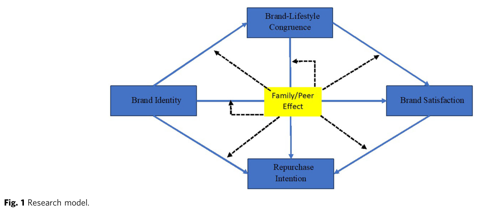
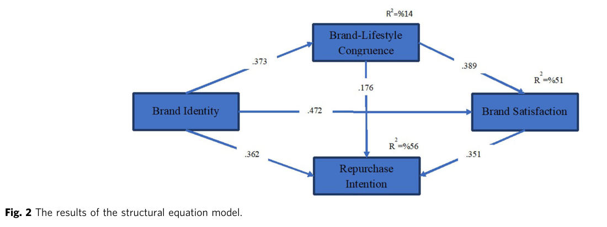
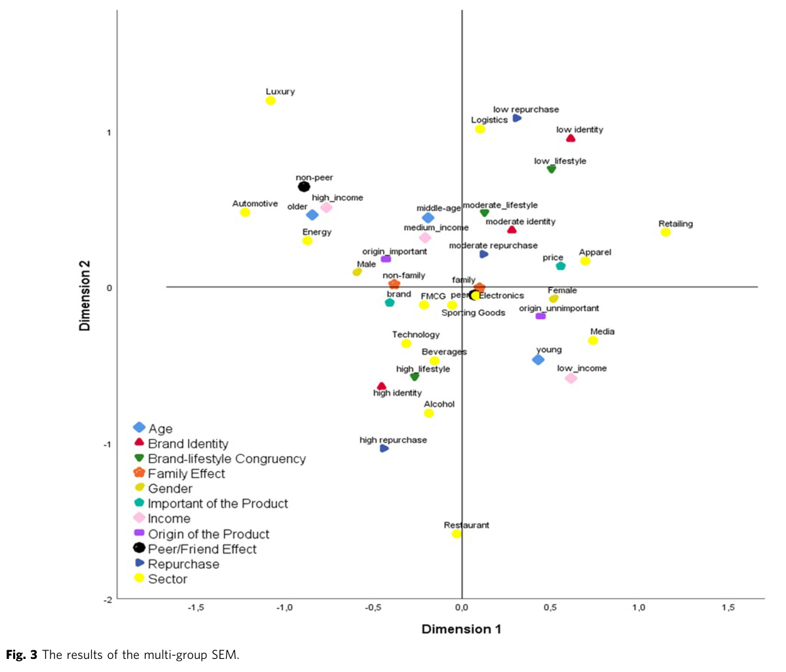
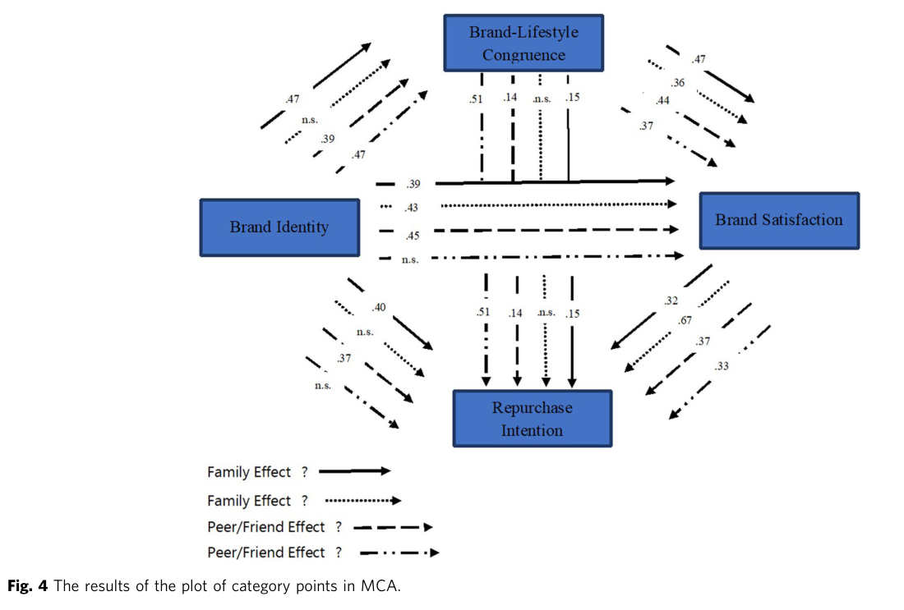

品牌認同、品牌生活型態一致性與品牌滿意度對再購意願之影響：多群組結構方程模型
The role of brand identity, brand lifestyle congruence, and brand satisfaction on repurchase intention: a multi-group structural equation model
第 1 頁摘要（Abstract）
本研究旨在探討品牌認同（brand identity）、品牌生活型態一致性（brand lifestyle congruence）、品牌滿意度（brand satisfaction）與再購意願（repurchase intention）之間的關係。此外，本研究亦透過多群組結構方程模型（multi-group structural equation model），檢驗主要參考群體（primary reference group）中的「家庭（family）」與「同儕／朋友（peer/friend）」如何影響個體對品牌認同、品牌生活型態一致性、品牌滿意度及購買意願（purchase intention）之知覺。本研究共針對自社群媒體管道收集而來之 610 份有效且可用之問卷回應進行分析。以社會認同理論（social identity theory）與自我一致性理論（self-congruity theory）為理論根基，本研究於研究模型架構內檢驗一系列研究假說。研究結果顯示，品牌認同對品牌生活型態一致性、品牌滿意度與再購意願均具有顯著影響；此外，品牌生活型態一致性顯著影響品牌滿意度與再購意願，而品牌滿意度亦顯著影響購買意願。再者，高收入與高齡消費者傾向忽略家庭與同儕效應；重視產品原產地（product origin）之中年、中等收入男性展現出強烈的品牌知覺，且較不受家庭因素影響；相較之下，通常屬於較低收入且以價格為導向之女性，則更容易接受家庭與同儕效應之影響，且普遍對產品原產地較不敏感。本研究透過檢視品牌生活型態一致性、品牌滿意度與購買意願之作用機制，推進了品牌認同領域之文獻發展。研究指出，品牌認同、品牌生活型態一致性與品牌滿意度之間的綜效（synergy）能顯著提升消費者之再購意願；除此之外，結合品牌、消費者與參考群體脈絡進行消費者輪廓（profiles）剖析，亦為本學術與實務領域帶來進一步之附加價值。
第 2 頁壹、緒論（Introduction）
在社會學領域中，消費行為深受身分認同形成（identity formation）以及群體成員間溝通等基本根源所影響。這些因素與不同生活型態（lifestyles）、個人認同（personal identity）及自我概念（self-concept）的發展息息相關 (Haanpää, 2007)。在影響消費與群體歸屬感的身分認同要素中，國家／民族認同（national identity）亦是一項不可或缺的核心元素 (Black and Veloutsou, 2017)。此外，品牌扮演著關鍵的文化符號角色，其所傳遞的意義在建立消費者與品牌之間的和諧共鳴上居於樞紐地位 (Hollenbeck et al. 2008)。Haanpää (2007) 指出，後現代消費社會對多元性與選擇自由的追求，催生了各式各樣的社會認同與生活型態。儘管生活型態對購買行為的影響往往未被消費者自身充分察覺，但它在形塑消費實踐上卻至關重要 (Suyanto et al. 2019)。生活型態不斷變遷的動態本質，支撐了個人購買風格與決策模式的發展 (Haanpää, 2007)，而這些風格與決策又進一步受到人格特質、過往購買經驗與年齡等因素的影響 (Adnan et al. 2017)。這種個體特質與社會影響力之間的交互作用，最終形成了一種特定的消費者行為模式：個體所購買的是「身分認同」，而非單純的實體產品。消費者尋求透過這些品牌選擇來展現自身的生活型態，並將自我表達置於功能性需求之上 (Arunyanart and Utiswannakul, 2019)。因此，每一項與消費相關的購買行為，皆與身分認同及生活型態緊密交織 (Suyanto et al. 2019)。
品牌認同（brand identity）向消費者傳遞一個品牌所提供的價值或所代表的立場，其焦點在於滿足消費者的象徵性需求（symbolic needs）更甚於功能性需求（functional needs），並透過品牌獨特性（brand distinctiveness）與品牌聲望（brand prestige），向消費者傳達該品牌相較於競爭對手所具備的獨特價值、地位與尊榮感 (Alnawas and Altarifi, 2016: 114)。因此，在競爭擁擠的市場中，品牌認同藉由向消費者傳達品牌所代表的核心精神並聚焦於象徵性而非功能性需求，成為市場差異化的重要元素 (Alnawas and Altarifi, 2016)。面對市場上琳瑯滿目的品牌選擇，品牌認同不僅滿足了消費者需求，更傳遞出品牌所賦予的獨特性與社會地位，這一點至關重要 (Da Silveira et al. 2013a)。舉例而言，Patagonia 以其對永續發展的堅定承諾以及「Worn Wear（舊衣穿戴）」行銷活動鎖定具環保意識的消費者，鼓勵購買二手產品以支持環境友善的生活型態。同樣地，Apple 透過強調創新與極簡設計，與精通科技的族群產生共鳴；而 Whole Foods Market 則藉由強調有機與天然食品，吸引重視健康的購物者 (Konuk, 2023)。此外，Red Bull 圍繞極限運動與充沛能量打造品牌認同，成功吸引熱愛冒險者與運動員。這些實例展現出品牌認同不僅反映了消費者行為與偏好，更能主動加以形塑。這種將品牌認同與消費者生活型態加以策略性對齊的做法，不僅能有效進行市場區隔，亦顯著影響消費者行為與品牌忠誠度 (Holt, 2002; Nam et al. 2011a)。再者，品牌認同深受文化因素影響，文化脈絡進一步塑造並界定了消費者與品牌之間的關係 (Coleman et al. 2011)。這些互動凸顯出文化脈絡與消費者生活型態選擇如何相互交織，進而塑造品牌知覺與消費者參與（consumer engagement）。
儘管既有文獻已對消費者行為與品牌認同進行了廣泛探討，但在理解社會認同與參考群體（reference groups）如何形塑品牌認同與生活型態選擇間之互動方面，仍存在顯著的研究缺口——尤其是在像土耳其（Türkiye）這類文化多元且處於發展階段的新興市場脈絡中。內部與外部參考群體（例如家庭與朋友）對消費者選擇的影響尚未獲得充分探索，特別是這些群體如何中介或調節消費者自我概念、生活型態契合度與品牌偏好之間的關係。本研究深入探究這些尚未被充分研究的動態機制，以填補文獻中的關鍵缺口，並提出一套全面性的分析途徑，用以理解非西方脈絡下影響消費者決策的細微因素。
本研究旨在探討品牌認同、品牌生活型態一致性、品牌滿意度與再購意願之間的關聯性，並特別聚焦於參考群體如何在土耳其消費市場中影響上述動態關係 (Le-Hoang, 2020; Mi et al. 2019; Ozdemir et al. 2020; Veloutsou and Moutinho, 2009; Wang et al. 2012; Wei and Yu, 2012; Yang et al. 2007)。透過剖析這些關係，本研究在考量消費者所處社會體系的前提下，提供了增進品牌忠誠度與消費者參與理解之實證證據。研究發現不僅豐富了學術理論討論，亦為行銷人員提供具體的實務意涵，協助其量身打造更緊密契合目標族群社會認同與生活型態的行銷策略。此一整合性研究途徑既填補了既有文獻的重要缺口，亦提升了富含文化底蘊場域中之品牌管理與消費心理學的學術及實務知識。
貳、文獻回顧與研究假說推導（Literature Review & Hypothesis Development）
2.1 文獻回顧（Literature review）
2.1.1 品牌認同（Brand identity）
品牌認同包含組織用以提升能見度、與競爭對手做出區隔，並建立品牌價值與消費者忠誠度的一系列策略性工具 (Keller, 1993; Wheeler, 2014)。其功能在於將顧客與品牌連結起來，提供有形與無形利益的組合，進而培育強健的品牌—顧客關係 (Aaker and Keller, 1996)。在品牌研究文獻中，品牌認同被視為企業內部一套持久穩定的架構 (Koporcic and Halinen, 2018)，負責形塑顧客對品牌的知覺以及與品牌的互動方式 (Törmala and Gyrd-Jones, 2017)。Iglesias et al. (2020) 將品牌認同定義為企業預期形象（intended image）與其對客戶所做承諾的結合體，這對於向外部與內部利害關係人傳達品牌的身分與核心價值至關重要 (Essamri et al. 2019)。品牌認同的策略性取向極具關鍵性，能透過培育信任、確保獨特性以及強化顧客承諾，進而左右品牌的市場成敗 (Mäläskä, Saraniemi and Tähtinen, 2011; Muhonen et al. 2017)。這當中涵蓋了發展一套能提供實用性（practical）、情感性（emotional）與自我表達性（self-expressive）優勢的價值主張 (Gustafson and Pomirleanu, 2021)，藉此與客戶建立深具意義的連結並強化長期忠誠度。總體而言，明確界定的品牌認同不僅支撐企業的策略目標，更在建立品牌與顧客間持久紐帶上扮演關鍵角色，其內涵遠超單純的視覺特徵或標誌（logos） (Essamri et al. 2019; Iglesias et al. 2020)。
2.1.2 品牌生活型態一致性（Brand-lifestyle congruence）
品牌生活型態一致性是一項核心概念，用以捕捉品牌精神（ethos）與顧客個人生活型態之間的契合程度。生活型態涵蓋個人的心理偏好、價值觀、信念與消費模式，對消費者行為具有顯著影響力 (Coursaris and Van Osch, 2015; Díaz et al. 2017; Holt, 2002; Li et al. 2018)。生活型態是個人傳達自身身分認同與偏好的強大媒介，且往往透過其所選擇的品牌展現出來 (Li et al. 2018)。第 3 頁這種表達並不侷限於單一領域，而是體現在生活的各個層面，包括能夠反映更廣泛生活型態選擇的飲食偏好在內 (Jang et al. 2011)。
重要的是，相較於人口統計變數，生活型態是預測消費者行為更為顯著的指標，這使得理解目標市場的生活型態並與之對齊對品牌而言至關重要 (Tangsupwattana and Liu, 2017)。能夠成功與消費者生活型態產生共鳴的品牌，更有可能培育出強烈的品牌忠誠度，因為顧客傾向被能夠反映其個人價值觀與生活型態的品牌所吸引 (Alnawas and Altarifi, 2015; Catalin and Andreea, 2014; Nam et al. 2011b; Solomon, 2015)。此種契合所提供的象徵性利益與產品的功能性層面同等重要，進而能提升消費者滿意度並促進重複購買 (Nam et al. 2011a; Sharma et al. 2018)。此外，持續理解並追蹤消費者不斷演變的生活型態，能協助品牌維持市場切合性（relevance），並與目標受眾保持正向關係。這種連結會帶來更高的品牌忠誠度，以及由對品牌的情感連結所驅動的購買行為 (Çifci et al. 2016; Ekinci et al. 2013)。
2.1.3 品牌滿意度（Brand satisfaction）
品牌滿意度是衡量消費者在購買後對產品或服務評價的關鍵指標，由消費者將其原先期望與實際表現進行比較而決定 (Tse and Wilton, 1988)。Tu and Chang (2012) 指出，滿意度可呈現為兩種形式：其一為「特定交易滿意度（transaction-specific）」，聚焦於單次購買體驗；其二為「累積性滿意度（accumulative）」，考量長期以來對某一產品的整體體驗 (Wardani and Gustia, 2016; Zboja and Voorhees, 2006)。正向的品牌體驗會引發對品牌的有利態度，進而顯著影響消費者忠誠度 (Chen-Yu et al. 2017; Cheng et al. 2019)。
Grisaffe and Nguyen (2011) 將品牌滿意度定義為消費者對品牌的綜合性評估，反映其對該產品或服務感到稱心滿意的深度。此種滿意度能培育對品牌的信任，進而提高重複購買的可能性 (Chinomona, 2013; Cuong, 2020)。此外，實證研究亦顯示，滿意度不僅能預測品牌信任，亦會提升品牌偏好；感到滿意的消費者更有可能一再選擇同一個品牌 (Shin et al. 2019)。這種偏好的形成，是因為滿意的顧客與品牌之間體驗到更深層的情感連結，而這正反映了品牌實際表現與其期望之間的高度契合 (Chinomona et al. 2013; Grisaffe and Nguyen, 2011)。
2.1.4 再購意願（Repurchase intention）
Ismail (2022) 將再購意願界定為消費者行為中的關鍵衡量指標，反映顧客在初次購買之後再次購買同一產品的可能性 (Taylor and Baker, 1994)。此一意願通常藉由消費者如何評估產品相對於其期望的表現來加以衡量 (Ismail, 2022)。Han et al. (2020) 將其描述為購買決策歷程的最終結晶，在此階段消費者會評估其所獲得的服務與產品品質。這項評估極為關鍵，因為它會影響整體購買行為，並能準確預測未來的購買行動。滿意度在此扮演重要角色：消費者會將其初始期望與產品實際表現加以對照，而此一比較結果便決定了其未來的購買決策 (Oliver, 1980)。Han et al. (2019) 進一步強調，對產品表現或品質的正向反應會孕育出強烈的再購意願。對於致力於提升市場聲譽與品牌價值的企業而言，達成高水準的顧客再購意願至關重要 (Yin et al. 2022)。
2.1.5 參考群體之影響與理論整合（Influence of reference groups and theoretical integration）
如同社會認同理論（social identity theory）所闡釋，參考群體會透過形塑消費者的知覺、態度與品牌偏好，顯著影響消費者行為。根據 Tajfel and Turner (1986) 的觀點，該理論主張個體會從其所隸屬的群體中汲取自身身分認同的部分內涵，進而指引其行為與偏好。這在像土耳其這類文化底蘊深厚的市場中尤具切合性，因為當地消費者的決策深受家庭與社交網絡等內部及外部參考群體所左右。Ekinci et al. (2013) 強調，生活型態是受社會認同影響的具體參考指標，而品牌認同則由自我概念中較為抽象的層面所支撐。Carrillo Barbosa and Guzmán Rincón (2022) 以及 Castillo-Abdul et al. (2022) 的進一步研究亦說明了企業如何針對特定人口統計與文化現實打造社會系統與互動關係，從而將理論洞見應用於實務行銷策略之中。社會認同與消費者行為之間的這些動態關聯，凸顯出理解參考群體對於發展能與目標族群產生共鳴之有效行銷策略的重要性，並藉此提升品牌忠誠度與消費者參與。此一全面性的研究途徑不僅強化了本文的理論架構，更為非西方市場的實務應用奠定了堅實基礎。
2.2 研究假說推導（Hypothesis development）
2.2.1 研究變數間之關係（Relationships between the study variables）
自我概念（self-concept）是理解消費者決策的一套實用理論架構。過往研究指出，顧客傾向選擇與其自我知覺（self-perception）或理想自我形象（desired self-image）相契合的品牌 (Landon, 1974; Malhotra, 1988; Sirgy, 2018)。多項研究已探討消費者如何透過與品牌個性（brand personalities）的互動來表達自身認同 (Belk, 1988; Dolich, 1969; Malhotra, 1988)。在心理學中，自我概念（亦稱為自我形象）被描述為「個體將自己視為一個客體時，對自身所抱持之想法與感受的總和」(Wang et al. 2021, p. 177)。
自我一致性（self-congruity）則是自我概念在邏輯上的延伸，在預測消費者行為上扮演關鍵角色，此概念已在心理學、行銷學及其他學科中獲得廣泛認同 (Sop and Kozak, 2019)。自我一致性理論主張，人們會選擇與自身自我概念相符的品牌或產品 (Kumar, 2016)。基於該理論的研究認為，顧客對品牌自我一致性（brand self-congruence）的知覺會影響其品牌選擇與購買決策 (Kumar, 2022; Sirgy et al. 2016)。較高的品牌自我一致性有助於培育顧客對品牌的滿意度、信念與忠誠度 (Li and Peng, 2021; Sirgy et al. 2016; Wang et al. 2019)。
品牌自我一致性與品牌認同之間的關係，核心在於顧客在選擇品牌或與品牌建立連結時，如何評估該品牌的認同與自身認同相契合的程度 (Kumar, 2016; Usakli and Baloglu, 2011)。知覺到自身認同與品牌認同高度契合的消費者，更有可能對該品牌抱持正向態度與偏好 (Lee and Jeong, 2014)。這種契合強化了品牌知覺與顧客忠誠度之間的連結。強烈的品牌認同能協助消費者對品牌產生親近感（affinity）並建立深厚關係。此外，清晰明確的品牌認同能在滿足消費者對獨特性渴望的同時，透過品牌聲望提升其自尊（self-esteem） (Alnawas and Altarifi, 2016)。
生活型態則是共同消費文化中另一項反映時間、金錢與消費者認同的關鍵要素 (Manthiou et al. 2018)。Aro et al. (2018) 發現，第 4 頁相較於未能反映自身特質的品牌，消費者更偏好能夠反映其身分認同與生活型態的品牌。諸如 Patagonia、Apple、Whole Foods Market 與 Red Bull 等企業，皆在其行銷策略中具體體現了此種關係。因此，品牌認同在品牌與顧客之間建立起連結關係 (Mao et al. 2020)。檢驗這些真實世界中的關聯性，能提供寶貴洞見並拓展學術文獻。據此提出假說 H1：
品牌認同會顯著影響消費者知覺與評價品牌的方式 (He et al. 2012)。強烈的品牌認同能同時滿足消費者的功能性需求與象徵性需求，從而強化其與品牌的連結並提升忠誠度 (Coleman et al. 2011)。品牌認同愈強，消費者對該品牌的認同感（identification）與滿意度就愈高。
根據品牌關係理論（brand relationship theory），強固的消費者—品牌關係能降低消費者轉換至競爭品牌的可能性 (Casidy et al. 2018)。該理論假定消費者會將品牌擬人化，並將其視為合作夥伴；當建立起強健的品牌關係時，消費者便會對該品牌感到滿意。在此脈絡下，品牌認同提升了消費者—品牌關係的品質與深度，進而對品牌滿意度產生正向影響。強烈的品牌認同會引導消費者認為該品牌更具價值，並對雙方的關係感到更加滿意。據此提出假說 H2：
當消費者相信某個品牌的認同與自身認同相契合時，便會強化其與該企業的連結，並提高重複購買的可能性 (Dennis et al. 2016)。例如，Patagonia 強調其環境友善實踐與減少碳足跡的努力，這與具環保意識的顧客高度契合，使這群顧客更傾向購買 Patagonia 並對其保持忠誠。品牌認同與消費者認同之間的知覺契合，會正向影響消費者—品牌關係並提高再購意願，因為消費者傾向再次光顧能夠反映自身認同的品牌 (He et al. 2012)。
Mao et al. (2020) 發現品牌認同與購買意願之間存在顯著的正向影響。當消費者知覺到品牌的認同與自身的價值觀、態度或生活型態一致時，便更傾向重複購買該品牌並維持忠誠 (Prentice et al. 2019)。據此提出假說 H3：
Grzeskowiak et al. (2016) 指出，品牌滿意度取決於消費者個人認同與品牌之間的契合度。生活型態指涉個體日常的願望與需求，同時也是消費者認同的一種投射 (Mathieu et al. 2018)。將自身品牌認同與顧客生活型態相對齊的品牌，更能妥善滿足消費者需求 (Augusto and Torres, 2018)。相較於僅聚焦在產品本身的品牌，迎合生活型態的品牌能為消費者帶來更豐富的體驗、趣味、愉悅感與滿意度 (Sina and Kim, 2019)。根據 Nam et al. (2011a) 的研究，生活型態一致性會顯著影響顧客對品牌的滿意度。據此提出假說 H4：
品牌生活型態一致性會強化品牌忠誠度，因為個體會與契合自身生活型態的品牌建立情感連結 (Haanpää, 2007)。當消費者知覺到品牌理解其生活型態且與自身價值觀一致時，便會建立起這些情感紐帶 (Li et al. 2012)。因此，個體傾向展現忠誠度，並持續選擇該品牌而非其競爭對手 (Tangsupwattana and Liu, 2017)。這種忠誠感與情感紐帶使消費者因與品牌相連的正向情緒，而考慮再次購買該品牌 (Pan et al. 2018)。
此外，滿意度對購買意願具有正向影響 (Alnawas and Aburub, 2016; Carlson et al. 2019; Li and Fang, 2019; Park et al. 2019)。感到滿意的顧客會更信任品牌，而當他們在消費體驗中持續獲得滿足時，便會將該品牌視為值得信賴的對象；信任進而引發更強烈的再購渴望 (Trivedi and Yadav, 2020)。據此提出假說 H5 與 H6：
2.2.2 參考群體之角色（The role of reference group）
社會認同（social identity）的概念，是指源於個體對某一社會群體之歸屬感，以及附著於該群體成員身分之情感價值的自我形象層面 (Tajfel, 1974)。根據社會認同理論，人們會基於自身的群體歸屬，形成獨特的個人認同與社會認同 (Bao et al. 2017)。此外，該理論指出，共享的態度與人格特質會啟動文化模式，促使個體透過與理想群體產生連結來獲得正向的社會認同 (Pentina et al. 2013)。人們在所屬群體內部會展現相似的行為，而對群體外部則表現出相異的行為 (Jiang et al. 2016)。群體成員亦傾向優先維護群體的形象與認同 (Shimul and Phau, 2023)。因此，社會認同理論預期能釐清顧客的品牌自我一致性、對品牌認同的情感依附，以及影響再購體驗的群際互動機制。
學者們運用社會認同理論來分析參考群體對品牌認同的影響 (Escalas and Bettman, 2003; White and Dahl, 2007)。參考群體會直接影響消費者—品牌關係 (Veloutsou and Moutinho, 2009)。White and Dahl (2006) 將參考群體區分為「內群體（in-groups，如家庭、同儕等）」與「外群體（out-groups，如仰慕群體 aspirational groups、疏離／排斥群體 dissociative groups 等）」。「內群體」或「成員群體（member group）」係指消費者實際所屬的群體；將品牌認同與內群體對齊，可能會強化消費者—品牌關係 (Escalas and Bettman, 2003)。家庭與同儕會在不盡相同的層次上影響消費者—品牌關係或品牌忠誠度：家庭建議往往因熟悉感而受到信賴；而同儕影響則透過共同經驗與歸屬感來支持品牌選擇，儘管其權威性較低 (Girard, 2010; Nolan et al. 2008)。據此提出假說 H7 與 H8：
綜上所述，本研究建立如圖 1 所示之研究模型。在「研究二（Study 2）」中，本研究亦採用多重對應分析（multiple correspondence analysis, MCA）評估參考群體對消費者輪廓剖析（consumer profiling）之影響。

參、研究方法（Methodology）
3.1 資料集準備與前測（Preparing the data set）
第 4 頁本研究問卷由三位精通英語且熟稔行銷學文獻的學者將英文量表翻譯為土耳其文，並憑藉其專業知識確保量表的表面效度（face validity）。隨後由另外兩位學者進行回譯（back-translations）以驗證翻譯準確性。在正式展開資料收集程序之前，本研究先針對 75 名受試者進行前測（pilot test），以評估問卷題項之清晰度與易懂性。
3.2 抽樣與資料收集（Data collection）
本研究之目標母體為年滿 18 歲且經常使用各類品牌的消費者。受訪者被要求先自行選定一個最喜愛的品牌，並依據所選品牌填答問卷。基於成本與時間效率考量，本研究採用便利抽樣法（convenience sampling method）。問卷透過 Google Drive 以線上形式施測，並經由社群媒體管道（Facebook、Twitter、LinkedIn）發放。第 5 頁資料收集於 2020 年初開始並於同期間結束。在剔除填答不完整的回應後，最終保留 610 份有效問卷。所有受訪者皆為自願參與，且未提供任何物質獎勵或誘因。
在受訪者結構方面，女性占 53.9%，男性占 46.1%。就收入水準而言，39.8% 的受訪者月收入為 3000₺（土耳其里拉）或以下（約當最低工資水準）；48.4% 的受訪者收入介於 3001₺ 至 7000₺ 之間，屬於中等收入群體；其餘 11.8% 收入為 7000₺ 或以上，歸類為高收入群體。在教育程度方面，12.9% 為副學士（專科）或以下學歷，54.3% 具備大學學士學位，32.8% 則擁有研究所（碩博士）學歷，顯示本樣本整體受教育程度相當高。
受訪者來自土耳其各個地理區域，其中以地中海地區（Mediterranean region）占比最高（46.4%），黑海地區（Black Sea region）代表性最低（2.8%）。此一廣泛的區域分布提供了足以反映土耳其整體趨勢的樣本基礎。
在產業類別偏好方面，最受喜愛的產業部門為服飾業（clothing，占 32.8%），其次依序為汽車業（automotive，占 17%）、科技業（technology，占 14.1%）以及運動服飾業（sportswear，占 9.8%），其餘各產業占比則介於 0.2% 至 3.4% 之間。絕大多數受訪者（92.8%）表示其朋友與同儕亦使用相同品牌，另有 79.5% 表示其家庭成員同樣使用該品牌。對 42.3% 的受訪者而言，產品價格是首要考量因素；而有 57.7% 的受訪者則將品牌置於優先考量。此外，有 48.4% 的受訪者在社群媒體上追蹤該品牌，但僅有 27% 同時參與線上與線下的品牌社群（brand communities）。茲將正文中所述之樣本人口統計與消費行為特徵彙整如表 A 所示：
| 統計維度 | 類別項目 | 百分比／數值 | 備註說明（有效樣本數 N = 610） |
|---|---|---|---|
| 性別（Gender） | 女性（Women） | 53.9% | 自願參與線上社群媒體問卷調查 |
| 男性（Men） | 46.1% | ||
| 月收入（Income, ₺） | 3000₺ 或以下（低收入／約最低工資） | 39.8% | 以土耳其里拉（Turkish lira, ₺）計價 |
| 3001₺ – 7000₺（中等收入群體） | 48.4% | ||
| 7000₺ 或以上（高收入群體） | 11.8% | ||
| 教育程度（Education） | 副學士（專科）或以下 | 12.9% | 大學及以上學歷合計達 87.1%，屬高學歷樣本 |
| 大學學士學位（Undergraduate） | 54.3% | ||
| 研究所學歷（Postgraduate） | 32.8% | ||
| 地理區域（Region） | 地中海地區（Mediterranean region） | 46.4% | 占比最高區域 |
| 黑海地區（Black Sea region） | 2.8% | 占比最低區域（其餘涵蓋土耳其各區） | |
| 喜愛品牌所屬產業（Sector） | 服飾業（Clothing） | 32.8% | 服飾與運動服飾合計達 42.6% |
| 汽車業（Automotive） | 17.0% | ||
| 科技業（Technology） | 14.1% | ||
| 運動服飾業（Sportswear） | 9.8% | ||
| 其他各產業部門 | 各占 0.2% – 3.4% | ||
| 參考群體共同使用率 | 朋友與同儕亦使用同一品牌 | 92.8% | 同儕／朋友參考群體（Peer/friend effect） |
| 家庭成員亦使用同一品牌 | 79.5% | 家庭參考群體（Family effect） | |
| 購買決策首要考量 | 優先考量品牌（Prioritized brand） | 57.7% | 品牌導向對比價格導向 |
| 優先考量產品價格（Product pricing） | 42.3% | ||
| 品牌社群互動參與 | 於社群媒體追蹤該品牌 | 48.4% | 線上追蹤率高於實際品牌社群成員率 |
| 同時為線上與線下品牌社群成員 | 27.0% |
3.3 研究工具與測量題項（Measures）
所有研究構念皆採用李克特七點量表（seven-point Likert-type scales）進行測量，選項錨點自「非常不同意（1）」至「非常同意（7）」。品牌認同（brand identity）量表改編自 Torres et al. (2017)，共包含 5 個題項；再購意願（repurchase intention）量表亦改編自同一文獻來源，共包含 3 個題項。品牌生活型態一致性（brand-lifestyle congruence）量表改編自 Nam et al. (2011a)，包含 3 個題項。品牌滿意度（brand satisfaction）則以 3 個題項進行測量，改編自 Davvetas and Diamantopoulos (2017)。
為界定參考群體，問卷向受訪者詢問：「您的家庭成員目前正在使用或曾經使用過您所選擇的這個品牌嗎？（Do your family members use or have used the brand you chose?）」以及「您的朋友或同儕目前正在使用或曾經使用過您所選擇的這個品牌嗎？（Do your friends or peers use or have used the brand you chose?）」。受訪者之回答被用來將其歸類至相應的參考群體組別中。
3.4 資料分析方法與常態性檢定（Data analysis and results）
本研究採用以共變異數為基礎之統計方法——結構方程模型（Structural Equation Modeling, SEM），並運用假定變數具多變量常態性（multivariate normality）之最大概似估計法（maximum likelihood method）。第一階段先執行驗證性因素分析（Confirmatory Factor Analysis, CFA），透過將理論構念配對至觀測變數來檢驗測量理論，以確定理論模型與實際資料的契合程度 (Hair et al. 2014a)。在經由 CFA 確認測量模型後，接著檢驗各構念之間的結構關係。之所以優先採用此一方法，是因為它能精確檢驗同步發生的多重關係，並旨在揭示變數之間的因果關聯。
結構方程模型以多組結構方程式來表徵理論，並透過視覺化路徑圖加以呈現 (Hair et al. 2014b)。為因應檢驗多變量常態性之困難，本研究針對每一個變數及其對應題項檢視單變量常態性（univariate normality） (Hair et al. 2014a)。Kolmogorov–Smirnov 檢定與 Shapiro–Wilk 檢定結果顯示，各變數並非呈常態分配（所有變數之 p 值皆為 0.00）。然而，所有題項之偏態（skewness）與峰度（kurtosis）數值皆落在 −1 至 +1 的範圍內，且原文附錄 1（Appendix 1）所提供的常態機率圖（Q-Q plot）亦具體呈現出良好的分布型態。此外，根據中央極限定理（central limit theorem），當樣本數足夠龐大時，無論原始變數本身的分配型態為何，樣本平均數的抽樣分配皆會趨近於常態分配 (Tabachnick and Fidell, 2007)。
肆、研究結果（Study 1 & Study 2 Results）
4.1 研究一：測量模型、結構模型與多群組分析（Study 1）
4.1.1 測量模型與共同方法變異檢定（Measurement model）
本研究共以 14 個測量題項衡量四個潛在構念。依據 Hu and Bentler (1999) 的配適度評估準則，本模型之各項配適度指標皆超越門檻標準。表 1 呈現了驗證性因素分析（CFA）的詳細結果。由於各構念之組合信度（Composite Reliability, CR）皆高於 0.7，且平均變異數萃取量（Average Variance Extracted, AVE）皆高於 0.5，確認本量表具備良好的信度與收斂效度（convergent validity） (Hair et al. 2014a)。表 2 同時顯示各構念間已達成區別效度（discriminant validity）。
當單一因素解釋了絕大部分的變異量時，便會產生共同方法變異（Common Method Bias, CMB）問題 (Gaskin and Lim, 2016; Podsakoff et al. 2003)。本研究首先執行 Harman 單一因素檢定（single-factor Harman test），以判斷是否由單一因素囊括了多數變異，結果顯示單一因素之解釋變異比例為 45%。然而，考量到 Harman 檢定法本身的侷限性，本研究進一步採用 Podsakoff et al. (2003) 所建議之「直接測量潛在方法因素法（directly measured latent methods factor approach）」重新檢驗 CMB。在將迴歸路徑等值限制為 0.58 的條件下，所解釋之變異量為 34%。由於 CMB 未超過 50% 的門檻，顯示本研究中並不存在共同方法變異，或其影響微乎其微而不具顯著性。
| 題項代碼 | 潛在構念與觀測題項（繁體中譯／英文原題） | 標準化因素負荷量 （Factor loading） |
|---|---|---|
| 品牌認同（Brand identity） → CR: 0.901；AVE: 0.648；MSV: 0.416 | ||
| BI1 | X 品牌非常具聲望與尊榮感。 X Brand is very prestigious. |
0.771 *** |
| BI2 | X 品牌是其所屬品類中最優秀的品牌之一。 X Brand is one of the best brands of its category. |
0.886 *** |
| BI3 | X 品牌是一流、高品質的品牌。 X Brand is a first-class, high-quality brand. |
0.899 *** |
| BI4 | X 品牌是獨一無二的。 X Brand is unique. |
0.650 *** |
| BI5 | X 品牌在競爭對手中脫穎而出。 X Brand stands out from its competitors. |
0.793 *** |
| 品牌生活型態一致性（Brand-lifestyle congruence） → CR: 0.906；AVE: 0.763；MSV: 0.319 | ||
| BLC1 | 這個品牌反映了我的個人生活型態。 This brand reflects my personal lifestyle. |
0.824 *** |
| BLC2 | 這個品牌與我的生活型態完全一致。 This brand is totally in line with my lifestyle. |
0.932 *** |
| BLC3 | 使用 X 品牌能支持我的生活型態。 Using in this X Brand supports my lifestyle. |
0.862 *** |
| 品牌滿意度（Brand satisfaction） → CR: 0.856；AVE: 0.669；MSV: 0.455 | ||
| SAT1 | 我對我所選擇的品牌感到開心。 I am happy with the brand I chose. |
0.871 *** |
| SAT2 | 我對我所選擇的品牌感到滿意。 I am satisfied with the brand I chose. |
0.898 *** |
| SAT3 | 該品牌符合我的期望。 The brand met my expectations. |
0.665 *** |
| 再購意願（Repurchase intention） → CR: 0.821；AVE: 0.606 | ||
| RPI1 | 我打算再次購買 X 品牌。 I intend to buy the X brand again. |
0.818 *** |
| RPI2 | 我會考慮購買 X 品牌的另一項產品。 I would consider buying another product from X brand. |
0.696 *** |
| RPI3 | 下次再度消費時，我會繼續選擇 X 品牌。 When consuming again, I will continue to choose X brand. |
0.815 *** |
| 構念（Construct） | BI（品牌認同） | BLC（品牌生活型態一致性） | SAT（品牌滿意度） | PI（購買／再購意願） |
|---|---|---|---|---|
| BI（品牌認同） | 0.874 | |||
| BLC（品牌生活型態一致性） | 0.373*** | 0.805 | ||
| SAT（品牌滿意度） | 0.565*** | 0.617*** | 0.818 | |
| PI（購買／再購意願） | 0.510*** | 0.645*** | 0.674*** | 0.779 |
4.1.2 結構模型分析結果（Structural model）
第 5–6 頁根據 Hu and Bentler (1999) 的準則，本結構模型之所有配適度指標均超越門檻值，顯示理論架構與實際觀測資料高度契合。表 3 與圖 2 呈現了結構方程模型之分析結果。
表 3 顯示，品牌認同顯著影響品牌生活型態一致性（β = 0.373, p = 0.001）、品牌滿意度（β = 0.472, p = 0.001）與再購意願（β = 0.362, p = 0.001）。同樣地，品牌生活型態一致性顯著影響品牌滿意度（β = 0.389, p = 0.001）與再購意願（β = 0.176, p = 0.001），而品牌滿意度亦顯著影響購買／再購意願（β = 0.351, p = 0.001）。整體結構模型分別解釋了品牌生活型態一致性 14% 的變異量、品牌滿意度 51% 的變異量，以及再購意願 56% 的變異量。
| 假說編號 | 結構路徑（Path） | 標準化估計值 （Standardized estimate） |
標準誤 （s.e.） |
t 統計量 （t-statistics） |
p 值 （p value） |
檢定結論 （Conclusion） |
學術備註 （Remarks） |
|---|---|---|---|---|---|---|---|
| H1 | BI → BLC（品牌認同 → 品牌生活型態一致性） | 0.373 | 0.061 | 8.52 | 0.001 | 支持（Supported） | 新發現（New） |
| H2 | BI → SAT（品牌認同 → 品牌滿意度） | 0.472 | 0.040 | 11.52 | 0.001 | 支持（Supported） | 既有驗證（Old） |
| H3 | BI → RPI（品牌認同 → 再購意願） | 0.362 | 0.042 | 7.43 | 0.001 | 支持（Supported） | 新發現（New） |
| H4 | BLC → SAT（品牌生活型態一致性 → 品牌滿意度） | 0.389 | 0.028 | 9.99 | 0.001 | 支持（Supported） | 既有驗證（Old） |
| H5 | BLC → RPI（品牌生活型態一致性 → 再購意願） | 0.176 | 0.027 | 3.98 | 0.001 | 支持（Supported） | 新發現（New） |
| H6 | SAT → RPI（品牌滿意度 → 再購意願） | 0.351 | 0.049 | 6.27 | 0.001 | 支持（Supported） | 既有驗證（Old） |

4.1.3 多群組結構方程模型與調節分析結果（Multi-group structural equation modeling and analysis results）
第 6 頁本研究進一步運用多群組結構方程模型（Multi-group SEM）比較各變數間的迴歸路徑差異。過往研究已證實多群組 SEM 在檢視文化 (Babin et al. 2016)、人口統計特徵 (Huang and Ge, 2019)、商店設計 (Murray et al. 2017) 以及婚姻狀況 (Aka and Buyukdag, 2021) 等變數上的高度價值。此方法能針對消費者行為提供細緻入微的剖析。多群組 SEM 檢驗同步事件間的因果關係是否會隨著不同調節變數而有所差異，從而允許研究者針對不同人口統計或心理統計（psychographic）變數進行推論。本研究具體檢驗了「家庭（family）」與「同儕／朋友（peer/friend）」參考群體如何影響個體對品牌認同、品牌生活型態一致性、品牌滿意度及購買意願之知覺。
多群組 SEM 之卡方自由度比（chi-square/df）為 2.772，比較配適指標（CFI）為 0.961，近似誤差均方根（RMSEA）為 0.051，配適度指標（GFI）為 0.924，調整後配適度指標（AGFI）為 0.887，顯示模型配適度相當理想。針對家庭效應（family effect），限制模型與非限制模型間之卡方差異值（chi-square difference）為 34.53，自由度差異（df difference）為 16（註：原文並列記載測量恆等檢定 p = 0.78 無顯著差異，而針對家庭效應之限制模型與非限制結構路徑模型間則存在顯著差異，p = 0.005，證實家庭效應對整體模型具有顯著調節作用）。
至於同儕效應（peer effect），其卡方差異值為 24.545，自由度差異為 16。同儕影響之限制模型與非限制模型之間並無整體顯著差異（p = 0.078）。接著，本研究針對每一條個別結構路徑剖析家庭與同儕／朋友效應，以識別局部路徑（local paths）是否存在顯著差異，結果如表 4 與圖 3 所示。
在「品牌認同與品牌生活型態一致性（BI → BLC）」的關係上，當受訪者受到家庭影響時，該路徑達統計顯著（β = 0.474, p < 0.001）；但在無家庭影響時則不顯著（β = 0.022，不顯著），兩組差異達顯著水準（p = 0.014），展現出家庭效應的顯著調節作用。相較之下，同儕／朋友效應並未調節此一關係（p = 0.180），因為無論有無同儕影響，該路徑皆達顯著水準（有同儕影響 β = 0.389***；無同儕影響 β = 0.466**）。
在「品牌認同對品牌滿意度（BI → SAT）」的影響上，無論有無家庭效應，品牌認同皆顯著影響品牌滿意度（有家庭效應 β = 0.389***；無家庭效應 β = 0.433***），顯示家庭並未調節此一關係（p = 0.332）。至於同儕效應，在有同儕影響時對品牌滿意度具顯著影響（β = 0.448***），在無同儕影響時則不顯著（β = 0.269†）；但整體群組間斜率差異檢定顯示，同儕效應並未顯著調節品牌認同與品牌滿意度之間的關係（p = 0.962）。
在「品牌認同對再購意願（BI → RPI）」的影響上，在有家庭效應（β = 0.396***）與有同儕效應（β = 0.370***）的情況下皆達顯著，但在缺乏家庭效應（β = 0.110†）或缺乏同儕效應（β = 0.131†）時則均不顯著；不過兩項參考群體效應之跨群組路徑差異皆未達統計顯著調節水準（家庭 p = 0.097；同儕 p = 0.615）。另一方面，「品牌生活型態一致性對品牌滿意度（BLC → SAT）」的影響在有、無家庭效應下皆達統計顯著（有家庭效應 β = 0.474***；無家庭效應 β = 0.362***），且家庭效應顯著調節了此一關係（p = 0.002）；同儕效應雖在兩種情況下皆顯著（有同儕 β = 0.436***；無同儕 β = 0.367**），但並未對此關係產生顯著調節作用（p = 0.833）。
「品牌生活型態一致性與再購意願（BLC → RPI）」之間的關係在有、無同儕效應下皆達顯著，且同儕效應顯著調節了此一關係（p = 0.012）。對於不受同儕效應影響的消費者而言，品牌生活型態一致性對再購意願的影響力（β = 0.512***）遠高於受同儕效應影響者（β = 0.140**）。因此，即便沒有同儕效應的推動，只要品牌與個人生活型態高度契合，仍會促使個體採納該品牌並展現更高的再購意願。
第 7 頁「品牌滿意度與再購意願（SAT → RPI）」之間的關係無論有無家庭效應皆達顯著，且家庭效應顯著調節了此一關係（p = 0.015）。儘管此關係在有、無同儕效應下亦皆顯著，但同儕效應並未產生顯著調節作用（p = 0.975）。具體而言，在有家庭參與影響的情況下，滿意度對再購意願的影響力較低（β = 0.319***）；而未受家庭效應影響的消費者則更加以滿意度為導向（β = 0.673***）。此一關係表明，受家庭影響的消費者即便滿意度較低，仍會延續過往習慣並持續購買；然而，不受家庭效應影響的消費者則高度取決於品牌滿意度。
就各內生構念之解釋變異量（R2）而言：品牌生活型態一致性（BLC）在有家庭效應組之解釋變異量為 22.4%，無家庭效應組為 0%，有同儕效應組為 15.1%，無同儕效應組為 21.7%。品牌滿意度（SAT）之解釋變異量在有家庭效應組為 55.1%，無家庭效應組為 32.5%，有同儕效應組為 54.3%，無同儕效應組為 29.9%。再購意願（RPI）之解釋變異量在有家庭效應組為 55.9%，無家庭效應組為 63%，有同儕效應組為 56.1%，無同儕效應組則高達 65.3%。
| 結構路徑 （Path） |
家庭效應 Family effect（整體模型 p = 0.005） | 同儕／朋友效應 Peer/Friend effect（整體模型 p = 0.078） | 備註 （Remarks） |
||||
|---|---|---|---|---|---|---|---|
| 有（Yes, N = 550） | 無（No, N = 134） | p 值 | 有（Yes, N = 638） | 無（No, N = 46） | p 值 | ||
| BI → BLC | 0.474*** | 0.022† | 0.014 | 0.389*** | 0.466** | 0.180 | 新發現（New） |
| BI → SAT | 0.389*** | 0.433*** | 0.332 | 0.448*** | 0.269† | 0.962 | 新發現（New） |
| BI → RPI | 0.396*** | 0.110† | 0.097 | 0.370*** | 0.131† | 0.615 | 新發現（New） |
| BLC → SAT | 0.474*** | 0.362*** | 0.002 | 0.436*** | 0.367** | 0.833 | 新發現（New） |
| BLC → RPI | 0.154*** | 0.152† | 0.582 | 0.140** | 0.512*** | 0.012 | 新發現（New） |
| SAT → RPI | 0.319*** | 0.673*** | 0.015 | 0.366*** | 0.328** | 0.975 | 新發現（New） |
| 解釋變異量（Explained variance, R²） | |||||||
| BLC（生活型態一致性） | 22.4% | 0% | — | 15.1% | 21.7% | — | — |
| SAT（品牌滿意度） | 55.1% | 32.5% | — | 54.3% | 29.9% | — | — |
| RPI（再購意願） | 55.9% | 63% | — | 56.1% | 65.3% | — | — |

4.2 研究二：多重對應分析（Study 2: Correspondence analysis）
第 7 頁對應分析（Correspondence Analysis, CA）是一種多變量統計方法，透過消費者的相似性與偏好來識別名目資料（nominal data）之間的關聯，進而將一組物件呈現在多維度空間中 (Hair et al. 2014a)。不同於主成分分析（principal component analysis），對應分析檢視變數之間關係的具體型態，這使得知覺定位圖（positioning map）極具關鍵價值 (Galiano-Coronil et al. 2023)。本研究依據不同的人口統計變數，檢驗主要參考群體中的家庭效應與同儕效應。此項分析透過多群組剖析識別出參考群體間的差異，釐清其如何與產業部門、人口統計結構及心理統計變數相對應，並提供深層洞見。本研究之多重對應分析（Multiple Correspondence Analysis, MCA）納入以下變數：同儕／朋友效應、家庭效應、性別、收入、產品原產地（product origin）、品牌所屬產業部門、知覺產品重要性（perceived product importance）以及年齡。
MCA 分析結果揭示：品牌認同、品牌生活型態一致性與再購意願皆處於低水準的消費者，主要集中在物流產業（logistics sector）。處於中等水準的消費者則多為中年、中等收入族群，偏好服飾產業（clothing sector），且屬於價格導向型（price-oriented）。高品牌認同與高再購意願則與酒類（alcohol）、科技（technology）及食品（food）產業中具品牌導向（brand-oriented）的消費者緊密相連。較年輕、低收入的女性普遍偏好服飾業，傾向價格導向，且更容易接受家庭與同儕影響。男性則重視產品原產地與品牌本身，同時較不受家庭因素影響。圖 4 顯示，較不受同儕影響的高收入與年長消費者，主要分布在能源（energy）、汽車（automotive）與奢侈品（luxury products）產業部門。

伍、討論與結論（Discussion & Conclusion）
5.1 綜合討論（Discussion）
第 7–8 頁本研究證實品牌認同對品牌生活型態一致性（β = 0.373, p = 0.001）、品牌滿意度（β = 0.472, p = 0.001）以及再購意願（β = 0.362, p = 0.001）皆具有顯著且實質的正向影響。這些研究發現與既有文獻一致，顯示消費者經常將自身的人格特質以及所屬參考群體的象徵性特徵投射並轉移至品牌之上 (Da Silveira et al. 2013b)。此種行為會進一步影響其身分認同與購買行為。Haanpää (2007) 指出，消費生活型態的建構是形塑個人認同的一種途徑；因此，品牌認同得以影響品牌生活型態一致性。此外，強烈的品牌認同亦有助於提升品牌滿意度 (Alnawas and Altarifi, 2015; Coelho et al. 2018; He et al. 2012; Stokburger-Sauer et al. 2012)。過往文獻同樣揭示，品牌認同會顯著影響品牌認同感（brand identification）與品牌滿意度 (He et al. 2012; Shirazi et al. 2013)。
第 8 頁品牌生活型態一致性正向且顯著地影響品牌滿意度（β = 0.389, p = 0.001）與再購意願（β = 0.176, p = 0.001）。雖然 Çifci et al. (2016) 曾發現品牌生活型態一致性與品牌滿意度之間並無顯著影響（與本研究結果不同），然而 Suyanto et al. (2019) 指出，生活型態一致性會影響產品偏好，社會階層的生活型態能有效左右產品偏好，且隨著消費者融入全球文化，社會階層生活型態會持續形塑這些偏好。Cătălin and Andreea (2014) 亦透過品牌認同與生活型態剖析消費者對品牌的順從與契合，並總結指出消費者傾向信任能表達其個人認同的品牌，且偏好選擇能針對其生活型態呈現獨特品牌形象的品牌。此外，品牌滿意度正向且顯著地影響再購意願（β = 0.351, p = 0.001），此項發現與 Alnawas and Aburub (2016)、Carlson et al. (2019)、Park et al. (2019) 以及 Li and Fang (2019) 等學者之研究結果完全一致。
家庭效應調節了整體研究模型，並在結構架構內帶來顯著差異，各變數間的關係會依據特定的局部路徑而有所不同。對於受到家庭過往品牌選擇影響的消費者而言，品牌認同會顯著影響品牌生活型態一致性、品牌滿意度與再購意願；然而，對於缺乏此種家庭影響的消費者而言，品牌認同僅對品牌滿意度產生顯著影響。因此，倘若消費者透過家庭使用習慣與家庭生活型態而對特定產品習以為常，他們便很有可能持續購買這些產品。在此脈絡下，本研究主張：在涉及家庭影響的情境中，長期記憶（long-term memory）的作用似乎比同儕影響更為有效。
在有家庭效應的情況下，品牌生活型態一致性會同時顯著影響品牌滿意度與再購意願；然而，在缺乏家庭影響時，僅有品牌生活型態一致性與品牌滿意度之間的關係維持正向顯著。Ozdemir et al. (2020) 指出，消費者的品牌體驗具有社會性，並受到同儕影響。Da Silva et al. (2016) 則闡明，生活型態是由過往經驗與個人特質共同形塑而成，並進一步影響家庭內部的消費習慣；因此，受家庭因素薰陶的生活型態將會影響家庭成員對品牌的知覺。Chen (2018) 亦指出家庭與參考群體能夠影響消費者的生活型態。本研究之上述發現與主流文獻相符，惟與 Çifci et al. (2016) 的研究結果有所差異。
無論有無家庭效應，品牌滿意度對再購意願的影響皆達顯著，但在無家庭效應組別中其迴歸係數更高。這意味著：受家庭影響的消費者行為主要是透過「生活型態」轉化為重複購買；而未受家庭影響的消費者行為則更多是由「滿意度」所驅動。第 9 頁因此，品牌應積極強調家庭共同使用的情境，並執行品牌知名度與促銷推廣活動以強化此一行為模式；若無法訴諸家庭連結，則極大化品牌滿意度依然是關鍵要務。
至於同儕或朋友方面，本研究並未在整體模型層次偵測到顯著的調節效應；然而，同儕效應確實在局部路徑上展現出顯著的調節效果。當考量有同儕效應時，品牌認同正向影響品牌生活型態一致性、品牌滿意度與再購意願；但在缺乏同儕效應時，品牌認同僅與品牌生活型態一致性之間具有顯著關係。無論有無同儕效應，品牌生活型態一致性皆顯著且正向地影響品牌滿意度與再購意願；不過，在無同儕效應的情況下，品牌生活型態一致性與再購意願（及滿意度關聯）的作用更強，並展現出顯著的調節效應。雖然這些結果與 Çifci et al. (2016) 不同，但與 Zhang (2010) 的研究一致——即同儕效應會顯著影響品牌滿意度與再購意願。整體而言，本研究發現與既有文獻相呼應。
Chernev et al. (2011) 亦指出，個體會根據自己渴望進入或離開的社會群體來使用品牌，本研究結果支持了此一文獻觀點。由於個人的社交圈與職場人際網絡經常變動，同儕影響下的品牌強化（reinforcement）與重複接觸（repetition）發生頻率低於家庭影響；當社交圈轉換時，因為品牌的重複與強化較不穩定一致，同儕影響的持續時間便較家庭影響更為短暫。
對於受同儕影響的個體（亦即選擇同儕所使用之品牌者）而言，品牌生活型態一致性與再購意願之間的連結強度，反而弱於不受同儕影響的個體。因此，容易受朋友影響的人更有可能改變其生活型態或偏好的品牌；相反地，較不受朋友圈左右的個體，則會與契合自身生活型態的品牌建立起更穩固的連結。Gomez and Spielmann (2019) 指出，參考群體效應取決於個體對該群體認同的緊密程度，且與內群體相關聯的品牌會比外群體品牌更強烈地與自我產生連結。Wei and Yu (2012) 亦發現，參考群體效應的暴露與受影響程度會隨年齡、性別、族裔與社會關係而異，例如拉丁裔（Hispanic）消費者便會依據族裔認同程度展現出不同的品牌知覺。本研究結果顯示，個體在同儕效應下與品牌形成的認同連結較弱，但在家庭脈絡下則會與品牌發展出更強韌的連結。
Wei and Yu (2012) 曾指出，相較於美國，泰國市場中的家庭效應強於同儕效應。在屬於另一個不同文化區域的土耳其，本研究發現生活型態在家庭效應組別中所被解釋的變異比例為 22.4%，而在同儕效應組別中則為 15.1%，兩者相差 7.3%。因此，就生活型態而言，家庭的影響力大於同儕；然而，此種差距在品牌滿意度與再購意願的解釋變異量上並未呈現顯著落差，因為兩組差異僅介於 0.2% 至 0.9% 之間。
相較之下，不受家庭效應影響的個體相當重視產品品牌、具備高度品牌知覺，且主要集中在快速消費品（fast-moving consumer goods, FMCG）、科技與運動產品等產業部門。相關分析亦指出，同儕效應在高收入與年長群體中的特定產業（特別是汽車、能源與奢侈品部門）呈現特定分布特徵。同時受到家庭與同儕雙方影響的消費者，往往對價格較為敏感，且主要為女性；她們聚焦於快速消費品、電子產品與運動產品，關注產品原產地資訊，並採取價格導向的消費行動。
Makgosa and Mohube (2007) 指出，同儕影響在不同產品品類間存在顯著差異，並同時作用於規範性影響（normative influences）與資訊性影響（informational influences），尤其在奢侈品上比日常必需品更為明顯。缺乏家庭效應似乎會提高消費者對品牌形象的敏感度，特別是在快速消費品、科技與運動產品領域。當家庭影響微小時，此一轉變反映出購買行為會轉向更具個人自主性或由個人生活型態所驅動的模式 (Bearden and Etzel, 1982)。
第 10 頁Greco (2015) 強調，家庭與同儕影響會在不同產品線中以截然不同的方式塑造消費者偏好，反映出社會動態如何形塑購買習慣。Kovitcharoenkul and Anantachart (2018) 亦指出，相較於單一的家庭或同儕效應，多重社會影響力在消費者行為上的交互作用呈現出更為多面向且細膩的樣貌。
上述研究發現揭示了消費者決策的複雜性，展現出社會影響力如何跨足不同人口統計特徵來形塑消費行為。這些結果有助於識別各個市場區隔及其對社會影響力的易感性（vulnerabilities），進而指引精準的目標行銷策略。總結而言，本分析透過詳盡闡釋同儕效應與家庭效應如何跨產業部門與人口統計群體分別及共同影響消費者選擇，豐富了既有學術知識。此一對消費者行為動態的全方位視野，具體說明了社會影響力如何個別或聯合塑造行為，並深入揭示特定消費者區隔之受影響傾向——為制定精準行銷策略提供實證依據。
5.2 結論（Conclusion）
品牌認同對於消費者的品牌生活型態一致性、品牌滿意度及再購意願而言至關重要。品牌生活型態一致性會影響品牌滿意度與再購意願，而品牌滿意度本身亦顯著影響再購意願。家庭效應與同儕效應同樣形塑了消費者行為：家庭效應調節了整體研究模型，而同儕效應則僅在局部路徑上發揮調節作用。家庭效應對於促使品牌與消費者生活型態對齊極為關鍵，而家庭與同儕效應兩者對於品牌滿意度與再購意願皆具關鍵影響力。即便在缺乏家庭或同儕影響的情況下，品牌依然能反映消費者的生活型態，且高度的品牌滿意度會帶來強烈的再購意願。最後，高收入與高齡消費者在特定高單價產業呈現出獨特的同儕與家庭影響分布型態，而主要受家庭單一因素影響的特定群體亦涵蓋部分中年、較低收入男性特徵。
Soininen and Merisuo-Storm (2010) 指出，同儕或朋友對年輕族群扮演不可或缺的重要角色，這與本研究之多重對應分析（MCA）結果一致。年長者較不受同儕影響，而中年與年輕族群則更常歸屬於受同儕與家庭影響的集群；其中重視品牌之消費者在購買時會優先考量品牌與產品原產地。無論在家庭影響或同儕影響方面，女性受影響程度皆較高、對產品原產地的關注度較低，且更加以價格為導向；因此，女性比男性更容易接受家庭與同儕效應的影響。
5.3 理論意涵與貢獻（Theoretical contribution）
本研究凸顯了品牌認同與品牌生活型態之間的顯著關聯，為既有文獻樹立了重要的理論貢獻；同時亦揭示了參考群體（家庭與同儕／朋友）在此一關係中所扮演的關鍵影響角色。根據社會認同理論，品牌生活型態與消費者認同之間的契合度，在消費者—品牌認同（consumer–brand identification）歷程中扮演重要調節因子。此外，本研究指出，家庭影響對歸屬感的衝擊往往強於同儕影響。此項洞見支持了社會化理論（socialization theory）的核心觀點，亦即消費者會透過與社會化媒介（social agents）的互動，發展出與消費相關的態度與行為。
Wang et al. (2012) 曾探討同儕作為重要社會化媒介的角色，特別是同儕如何透過溝通來形塑品牌偏好；然而，他們的分析並未深入探究家庭在品牌選擇中的影響力。本研究透過提供「家庭影響比同儕影響更深刻地形塑消費者—品牌認同」的實證證據，成功填補了此一研究缺口。這項洞見進一步深化了我們對於不同社會化媒介在提升品牌忠誠度與消費者參與上所扮演角色的理解。
本研究將品牌認同與生活型態一致性加以連結，並檢驗兩者對品牌滿意度與再購意願的共同影響，從而拓展了自我一致性理論（self-congruity theory）。此一整合性模型具體展示了不同參考群體如何調節上述關係，進而導引出差異化的消費者行為。這種對複雜機制的刻畫，為理解消費者—品牌關係提供了一套全面性的分析架構，大幅豐富了該理論的內涵。
關係行銷理論（relationship marketing theory）主張，強固的品牌關係能減少跨品牌轉換行為（inter-brand switching）。本研究藉由證實「家庭影響比同儕影響更能強化消費者—品牌關係，進而增進信任並降低轉換品牌的可能性」，進一步鞏固了該理論。Petina et al. (2013) 曾強調信任是關係行銷的基石，但過往文獻尚未充分探討參考群體如何影響品牌關係內部的信任動態。本研究彌補了此一疏漏，證實家庭群體往往能孕育更深厚的信任與更穩固的品牌關係。這項洞見向行銷學者與實務界表明，設計能在目標群體中培育信任的品牌策略，對於提升行銷成效與品牌忠誠度至關重要。
文化品牌理論（cultural branding theory）指出，品牌的力量源自消費者試圖透過品牌選擇來傳達自身身分認同的努力 (Smith and Speed, 2011)。過往研究往往忽略了不同參考群體——特別是家庭與同儕——如何影響品牌塑造工作。本研究透過證實這些群體會以截然不同的方式影響消費者—品牌關係，成功填補了此一缺口。研究結果顯示，品牌策略必須納入主流參考群體的動態機制，方能在這些社會脈絡中有效地協商並建構品牌認同。此項洞見強調品牌策略必須因應影響消費者行為的特定社會力量進行調適，從而深化了對文化品牌理論的理解。
綜上所述，本研究之發現支持了關係行銷理論與文化品牌理論，證實受家庭動態影響而建立在深厚信任基礎上的強健關係，能有效降低品牌轉換行為；此外，參考群體在形塑品牌認同與消費者行為上的顯著效力，亦為如何善用文化元素以強化消費者連結提供了嶄新的理論視角。
5.4 實務與管理意涵（Managerial implication）
本研究為致力於圍繞品牌認同、生活型態一致性及其對品牌滿意度與再購意願之影響來優化行銷策略的管理者與行銷人員，提供了關鍵的實務洞見。能與消費者生活型態產生共鳴的強烈品牌認同，不僅能提升品牌滿意度與再購意願，更能使品牌在市場中占據具競爭力的有利定位。策略性地投資於品牌認同建設，有助於與目標族群的生活型態產生共鳴並加以形塑，Apple 的市場成功便是最具代表性的典範。擁有清晰品牌認同的品牌，更具備主導其所屬市場區隔的實力。
家庭與同儕群體顯著形塑了消費者行為，其中家庭紐帶尤其深刻影響品牌滿意度與生活型態一致性。品牌應善用這些洞見，透過喚起懷舊情感連結（nostalgic connections）的促銷訊息進行溝通，特別是針對家庭關係緊密的消費者。以家庭為導向的行銷策略能將品牌深植於消費者的日常生活型態之中，創造長期的品牌忠誠度，使顧客更有可能持續回購產品。
針對主要受同儕影響與主要受家庭影響的消費者，企業可能需要採取截然不同的策略。第 11 頁由於受同儕影響而產生的生活型態改變較不穩定，企業應投資於鎖定持久且具廣泛吸引力之生活型態的品牌塑造，以確保長期獲利能力；而對於深受家庭影響的消費者而言，基於懷舊情感的行銷（nostalgia-based marketing）則能發揮特別顯著的成效。
企業亦應致力於提升品牌品質知覺與滿意度，特別是針對未受家庭或同儕強烈影響的獨立型消費者。有效的溝通與品牌知名度活動對於改善品牌在消費者心目中的定位不可或缺。透過深入理解並回應這些消費者的特定需求與偏好，企業將能達成更高的品牌滿意度與忠誠度。
行銷策略同時應納入性別對同儕與家庭影響反應上的差異考量。針對女性消費者，在維持品質的前提下採取具價格敏感度的定價與促銷策略，能有效囊括可觀的市場占有率，尤其是在服飾與媒體領域；針對男性消費者，由於其受特定同儕與原產地資訊影響之特性，強調品牌原產地（brand origin）並提供高品質單品往往更具成效。此外，即時監測社群媒體管道的顧客回饋並積極處理負面知覺，對於維持消費者信任與忠誠度亦至關重要。
企業應將上述洞見整合至長期發展策略之中：打造能夠順應不斷演變之生活型態的品牌認同，並有效運用參考群體動態機制，將協助企業維持競爭優勢並實現永續成功。
5.5 研究限制與未來研究方向（Future research and limitation）
本研究的第一項限制在於樣本收集方式：由於資料並非透過隨機抽樣（random sampling）收集而來，研究結果無法直接推論至全體母體；因此，未來類似研究應採用隨機抽樣方法以提高研究發現之外部效度。第二項限制在於本研究僅聚焦於單一特定地理區域與集體主義文化（collectivist culture）脈絡；未來若能在不同地理區域、不同文化型態（個人主義文化或集體主義文化）中展開類似研究，或進行跨文化比較分析，將能進一步提升研究的效度與普適性。第三項限制則是本研究所納入的心理統計變數（psychographic variables）數量有限；在社會科學中，「人」的因素極為關鍵，且往往同時受到眾多變數的交互影響。最後，本研究僅聚焦於「主要參考群體（primary reference groups，即家庭與同儕）」；未來研究應納入「次要參考群體（secondary reference groups）」，並將其效果與主要參考群體進行對比，以為學術文獻注入更多寶貴洞見。
第 11、13、14 頁陸、資料可用性、作者貢獻、倫理審查與出版授權聲明
補充資訊與開放取用授權條款（Additional information & Open Access）
補充資訊（Supplementary information）：本文線上版本載有補充材料（含附錄 Q-Q 常態機率圖等），可參閱 https://doi.org/10.1057/s41599-024-03618-w。有關論文通訊與研究材料申請事宜，請聯繫通訊作者 Ayşegül Acar。抽印本與授權資訊請參閱 http://www.nature.com/reprints。
出版商聲明（Publisher’s note）：Springer Nature 對於已發表地圖中之管轄權主張及機構隸屬關係保持中立立場。
開放取用授權（Open Access）：本文係依據「創用 CC 姓名標示 4.0 國際授權條款（Creative Commons Attribution 4.0 International License, CC BY 4.0）」授權公開發表。只要您適當標示原作者與出處來源、提供創用 CC 授權條款連結，並註明是否曾進行修改，即允許在任何媒介或格式中使用、分享、改作、散布及重製。除於材料來源說明中另有註明者外，本文內含之圖片或其他第三方素材均涵蓋於本文之創用 CC 授權範圍內。若特定素材未包含於本文創用 CC 授權範圍內，且您的預期使用方式未獲法定例外允許或超出授權許可範圍，您必須直接向著作權人取得授權許可。欲檢視本授權條款副本，請造訪 http://creativecommons.org/licenses/by/4.0/。© 作者群（The Author(s)）2024。
第 14 頁Springer Nature 期刊內容使用條款與條件（Terms and Conditions）
本 Springer Nature 期刊內容由 Springer Nature Customer Service Center GmbH（以下簡稱「Springer Nature」）提供。Springer Nature 支持作者、訂閱者及獲授權使用者（以下統稱「使用者」）在保留所有著作權、商標、服務標章及其他專有權利聲明的前提下，為小規模個人、非商業用途合理分享研究論文。一旦存取、分享、接收或以其他方式使用 Springer Nature 期刊內容，即表示您同意本使用條款（「本條款」）。就此目的而言，Springer Nature 將研究人員與學生之學術使用視為非商業用途。
本條款屬補充性質，除任何適用之網站條款與條件、相關場域授權（site licence）或個人訂閱協議外，亦同時適用本條款。若就相關條款、場域授權或個人訂閱協議產生任何衝突或歧義，在該衝突或歧義範圍內概以本條款為準。針對採用創用 CC（Creative Commons）授權發表之文章，則適用該文所採用之創用 CC 授權條款。
我們收集並使用個人資料以提供 Springer Nature 期刊內容之存取服務；我們亦可能於 ResearchGate 及 Springer Nature 內部使用這些個人資料，並依約定以匿名化方式分享，作為追蹤、分析與統計報告之用。除非取得您的許可或依隱私權政策另有詳述，否則我們不會將您的個人資料揭露予 ResearchGate 或 Springer Nature 集團企業以外之第三方。
儘管使用者得將 Springer Nature 期刊內容用於小規模、個人及非商業用途，惟請注意使用者不得從事下列行為：（1）為向其他使用者提供定期或大規模存取之目的而使用該內容，或將其作為規避存取控制之手段；（2）在任何司法管轄區內構成刑事或法定違法行為、引發民事責任或其他非法情事之使用；（3）除非經 Springer Nature 事前書面明確同意，否則不得虛偽或誤導性地暗示或宣稱獲得背書、核准、贊助或關聯；（4）使用機器人程式（bots）或其他自動化方法存取內容或重新導向訊息；（5）規避或覆寫任何安全機制或排除協定；或（6）為建立 Springer Nature 產品或服務之替代品，或建立 Springer Nature 期刊內容之系統化資料庫而分享內容。
依據禁止商業使用之限制，Springer Nature 不允許利用我們的內容創造產生營收、權利金、租金或收入之產品或服務，亦不得將其納入付費服務之一部分或用於其他商業利益。Springer Nature 期刊內容不得用於館際互借（inter-library loans），且圖書館員不得將 Springer Nature 期刊內容大規模上傳至其所屬或任何其他機構典藏庫。
本使用條款會定期檢討並可能隨時修訂。Springer Nature 並無義務於本網站發布任何資訊或內容，且得隨時自行決定移除內容、特色或功能，無須事先通知。Springer Nature 得隨時撤銷對您的授權，並移除您已儲存之任何 Springer Nature 期刊內容副本。在法律允許之最大範圍內，Springer Nature 不對使用者就期刊內容提供任何明示或默示之保證、聲明或擔保，所有當事人茲聲明免除並放棄法律所課予之一切默示保證或擔保（包括適銷性或特定目的適用性）。請注意，上述權利不會自動延伸至 Springer Nature 所出版但可能係自第三方取得授權之內容、資料或其他素材。若您希望向更廣泛受眾、定期或以本條款未明確許可之任何其他方式使用或散布 Springer Nature 期刊內容，請聯繫 Springer Nature：onlineservice@springernature.com。
第 11–13 頁柒、參考文獻（References）
- Aaker DA, Keller KL (1996) Building strong brands. The Free Press
- Adnan A, Ahmad A, Khan MN (2017) Examining the role of consumer lifestyles on ecological behavior among young Indian consumers. Young Consum 18:348–377
- Aka S, Buyukdag N (2021) How to prevent food waste behaviour? A deep empirical research. J Retail Consum Serv 61:102560
- Alnawas I, Altarifi S (2015) Exploring the role of brand identification and brand love in generating higher levels of brand loyalty. J Vacation Mark 22:111–128. https://doi.org/10.1177/1356766715604663
- Alnawas I, Altarifi S (2016) Exploring the role of brand identification and brand love in generating higher levels of brand loyalty. J Vacation Mark 22(2):111–128. https://doi.org/10.1177/1356766715604663
- Alnawas I, Aburub F (2016) The effect of benefits generated from interacting with branded mobile apps on consumer satisfaction and purchase intentions. J Retail Consum Serv 31:313–322
- Alnawas I, Altarifi S (2016) Exploring the role of brand identification and brand love in generating higher levels of brand loyalty. J Vacat Mark 22:111–128
- Aro K, Suomi K, Saraniemi S (2018) Antecedents and consequences of destination brand love—A case study from Finnish Lapland. Tour Manag 67:71–81
- Arunyanart S, Utiswannakul P (2019) A model for generating a lifestyle fashion brand from cultural capital for generation asia in Bangkok, Thailand. Des J 22:125–142
- Augusto M, Torres P (2018) Effects of brand attitude and eWOM on consumers’ willingness to pay in the banking industry: mediating role of consumer-brand identification and brand equity. J Retail Consum Serv 42:1–10
- Babin BJ, Borges A, James K (2016) The role of retail price image in a multi-country context: France and the USA. J Bus Res 69:1074–1081
- Bao H, Deng S, Xu S, Peng Y (2017) Conspicuous consumption behavior of land-lost farmers: a perspective of social identity. Cities 66:81–90
- Bearden W, Etzel M (1982) Reference group influence on product and brand purchase decisions. J Consum Res 9:183–194
- Belk RW (1988) Possessions and the extended self. J Consum Res 15:139–168
- Black I, Veloutsou C (2017) Working consumers: co-creation of brand identity, consumer identity and brand community identity. J Bus Res 70:416–429
- Carlson J, Rahman MM, Taylor A, Voola R (2019) Feel the VIBE: examining value-in-the-brand-page-experience and its impact on satisfaction and customer engagement behaviours in mobile social media. J Retail Consum Serv 46:149–162
- Carrillo Barbosa RL, Guzmán Rincón A (2022) Art workers in Colombia: characteristics, symbolic consumption and social identity. Eur Res Manag Bus Econ. https://doi.org/10.1016/j.iedeen.2021.100180
- Casidy R, Wymer W, O’Cass A (2018) Enhancing hotel brand performance through fostering brand relationship orientation in the minds of consumers. Tour Manag 66:72–84
- Castillo-Abdul B, Ortega Fernandez E, Romero-Rodriguez LM (2022) Corporate social responsibility communication of male luxury fashion brands: analysis on Instagram, Facebook and TikTok. Manag Decis. https://doi.org/10.1108/MD-09-2022-1316
- Catalin MC, Andreea P (2014) Brands as a means of consumer self-expression and desired personal lifestyle. Procedia - Soc Behav Sci 109:103–107. https://doi.org/10.1016/j.sbspro.2013.12.427
- Chen HJ (2018) What drives consumers’ mobile shopping? 4Ps or shopping preferences? Asia Pac J Mark Logist 30:797–815
- Cheng YY, Tung WF, Yang MH, Chiang CT (2019) Linking relationship equity to brand resonance in a social networking brand community. Electron Commerce Res Appl 35:100849
- Chen-Yu J, Cho S, Kincade D (2017) Brand perception and brand repurchase intent in online apparel shopping: An examination of brand experience, image congruence, brand affect, and brand trust. J Glob Fashion Mark 7(1):30–44. https://doi.org/10.1080/20932685.2015.1110042
- Chernev A, Hamilton R, Gal D (2011) Competing for consumer identity: limits to self-expression and the perils of lifestyle branding. J Mark 75:66–82
- Chinomona R (2013) The influence of brand experience on brand satisfaction, trust and attachment in South Africa. Int Bus Econ Res J 12(10):1303–1316. https://doi.org/10.19030/iber.v12i10.8138
- Chinomona R, Mahlangu D, Pooe D (2013) Brand service quality, satisfaction, trust and preference as predictors of consumer brand loyalty in the retailing industry. Mediterranean J Soc Sci 4(14):181
- Çifci S, Ekinci Y, Whyatt G, Japutra A, Molinillo S, Siala H (2016) A cross validation of consumer-based brand equity models: driving customer equity in retail brands. J Bus Res 69:3740–3747
- Claudiu Cătălin M, Andreea P (2014) Brands as a means of consumer self-expression and desired personal lifestyle. Procedia - Soc Behav Sci 109:103–107
- Coelho PS, Rita P, Santos ZP (2018) On the relationship between consumer-brand identification, brand community, and brand loyalty. J Retailing Consum Serv 43(1):101–110. https://doi.org/10.1016/j.jretconser.2018.03.011
- Coleman D, de Chernatony L, Christodoulides G (2011) B2B service brand identity: scale development and validation. Ind Mark Manag 40:1063–1071
- Coursaris CK, Van Osch W (2015) Social media research: An assessment of the domain’s productivity and intellectual evolution. In Proceedings of the 2015 48th Hawaii International Conference on System Sciences (HICSS) (pp. 3540–3549). IEEE. https://doi.org/10.1109/HICSS.2015.201
- Cuong DT (2020) The impact of customer satisfaction, brand image on brand love and brand loyalty. Journal of Advanced Research in Dynamical and Control Systems, 12. https://doi.org/10.5373/JARDCS/V12I6/S20201280
- Da Silva IS, Slongo LA, Antunes Rohde L (2016) Empty nest couples: lifestyles and typology. Int J Consum Stud 40:695–700
- Da Silveira C, Lages C, Simões C (2013b) Reconceptualizing brand identity in a dynamic environment. J Bus Res 66:28–36
- da Silveira C, Lages C, Simões C (2013a) Reconceptualizing brand identity in a dynamic environment. J Bus Res 66:28–36
- Davvetas V, Diamantopoulos A (2017) “Regretting your brand-self?” The moderating role of consumer-brand identification on consumer responses to purchase regret. J Bus Res 80:218–227
- Dennis C, Papagiannidis S, Alamanos E, Bourlakis M (2016) The role of brand attachment strength in higher education. J Bus Res 69:3049–3057
- Díaz A, Gómez M, Molina A (2017) A comparison of online and offline consumer behaviour: an empirical study on a cinema shopping context. J Retail Consum Serv 38:44–50
- Dolich IJ (1969) Congruence relationships between self-images and product brands. J Mark Res 6:80–84
- Ekinci Y, Sirakaya-Turk E, Preciado S (2013) Symbolic consumption of tourism destination brands. J Bus Res 66:711–718
- Escalas JE, Bettman JR (2003) You are what they eat: the influence of reference groups on consumers’ connections to brands. J Consum Psychol 13:339–348
- Essamri A, McKechnie S, Winklhofer H (2019) Co-creating corporate brand identity with online brand communities: A managerial perspective. J Bus Res 96:366–375. https://doi.org/10.1016/j.jbusres.2018.07.015
- Galiano-Coronil A, Aguirre Montero A, López Sánchez JA, Díaz Ortega R (2023) Exploring social responsibility, social marketing and happiness using artificial intelligence, automated text analysis and correspondence analysis. Manag Decis. https://doi.org/10.1108/MD-01-2023-0099
- Gaskin J, Lim J (2016) Confirmatory factor analysis—StatWiki. Retrieved from http://statwiki.kolobkreations.com/index.php?title=Confirmatory_Factor_Analysis
- Girard T (2010) The role of demographics on the susceptibility to social influence: a pretest study. J Mark Dev Compet 5:9–22
- Gomez P, Spielmann N (2019) A taste of the elite: the effect of pairing food products with elite groups on taste perceptions. J Bus Res 100:175–183
- Greco A (2015) Differences in susceptibility to reference group influence on brand decisions: middle aged and elderly group participants. https://doi.org/10.1007/978-3-319-11101-8_10
- Grisaffe DB, Nguyen HP (2011) Antecedents of emotional attachment to brands. J Bus Res 64(10):1052–1059
- Grzeskowiak S, Sirgy MJ, Foscht T, Swoboda B (2016) Linking retailing experiences with life satisfaction: the concept of story-type congruity with shopper’s identity. Int J Retail Distrib Manag 44:124–138
- Gustafson BM, Pomirleanu N (2021) A discursive framework of B2B brand legitimacy. Ind Mark Manag 93(4):22–31. https://doi.org/10.1016/j.indmarman.2020.12.009
- Haanpää L (2007) Consumers’ green commitment: Indication of a postmodern lifestyle? Int J Consum Stud 31:478–486
- Han H, Kim W, Hyun SS (2019) Critical role of satisfaction in the formation of customer loyalty and repurchase intention in restaurant services. Int J Hospitality Manage 82:165–175
- Han H, Nguyen H, Lee TJ (2020) The importance of product and service quality in the development of brand loyalty and repurchase intentions. J Retailing and Consumer Services 55:102094
- Hair JF, Black WC, Babin BJ, Anderson RE (2014a) Multivariate data analysis. Prentice Hall, Pearson, p 816
- Hair JF, Black WC, Babin BJ, Anderson RE (2014b) Multivariate data analysis. Pearson Education
- He H, Li Y, Harris L (2012) Social identity perspective on brand loyalty. J Bus Res 65:648–657
- Hollenbeck CR, Peters C, Zinkhan GM (2008) Retail spectacles and brand meaning: Insights from a brand museum case study. J Retail 84:334–353
- Holt DB (2002) Poststructuralist lifestyle analysis: conceptualizing the social patterning of consumption in postmodernity. J Consumer Res. https://doi.org/10.1086/209487, https://interbrand.com/best-brands/
- Hu L, Bentler PM (1999) Cutoff criteria for fit indexes in covariance structure analysis: conventional criteria versus new alternatives. Struct Equ Model Multidiscip J 6(1):1–55
- Huang X, Ge J (2019) Electric vehicle development in Beijing: an analysis of consumer purchase intention. J Clean Prod 216:361–372
- Iglesias O, Landgraf P, Ind N, Markovic S, Koporcic N (2020) Corporate brand identity co-creation in business-to-business contexts. Industrial Marketing Manage 87:155–171. https://doi.org/10.1016/j.indmarman.2019.10.001
- Ismail IJ (2022) I trust friends before I trust companies: The mediation of WOM and brand love on psychological contract fulfilment and repurchase intention. Manage Matters 19(2):167–186. https://doi.org/10.1108/MANM-02-2022-0033
- Jang YJ, Kim GW, Bonn MA (2011) Generation Y consumers’ selection attributes and behavioral intentions concerning green restaurants. International J Hospital Manag 95(1):345–361
- Jiang C, Zhao W, Sun X, Zhang K, Zheng R, Qu W (2016) The effects of the self and social identity on the intention to microblog: an extension of the theory of planned behavior. Comput Hum Behav 64:754–759
- Keller KL (1993) Conceptualizing, measuring, and managing customer-based brand equity. J Mark 57(1):1–22. https://doi.org/10.2307/1252054
- Konuk FA (2023) Trustworthy brand signals, price fairness and organic food restaurant brand loyalty. Manag Decis. https://doi.org/10.1108/MD-07-2022-0889
- Koporcic N, Halinen A (2018) Creating corporate identity and reputation through interpersonal interaction. Interactive Network Branding 12(2):392–408
- Kovitcharoenkul N, Anantachart S (2018) Examining reference group influences on young consumers’ product and brand decisions. J Public Relat 9:131–148
- Kumar V (2016) Examining the role of destination personality and self-congruity in predicting tourist behavior. Tour Manag Perspect 20:217–227
- Kumar V (2022) Enhancing participation intentions in online brand communities. Mark Intell Plan 40:898–913
- Landon EL (1974) Self-concept, ideal self-concept, and consumer purchase intentions. J Consum Res 1:44–51
- Lee S, Jeong M (2014) Enhancing online brand experiences: an application of congruity theory. Int J Hosp Manag 40:49–58
- Le-Hoang PV (2020) Factors affecting online purchase intention: the case of e-commerce on lazada. Indep J Manag Prod 11:1018
- Li G, Li G, Kambele Z (2012) Luxury fashion brand consumers in China: perceived value, fashion lifestyle, and willingness to pay. J Bus Res 65:1516–1522
- Li Y, Peng Y (2021) Influencer marketing: purchase intention and its antecedents. Mark Intell Plan 39:960–978
- Li Y, Liu H, Lim ETK, Goh JM, Yang F, Lee MKO (2018) Customer’s reaction to cross-channel integration in omnichannel retailing: the mediating roles of retailer uncertainty, identity attractiveness, and switching costs. Decis Support Syst 109:50–60
- Li CY, Fang YH (2019) Predicting continuance intention toward mobile branded apps through satisfaction and attachment. Telemat Inform 43:101248
- Makgosa R, Mohube K (2007) Peer influence on young adults’ products purchase decisions. Afr J Bus Manag 1:064–071
- Mäläskä M, Saraniemi S, Tähtinen J (2011) Network actors’ participation in B2B SME branding. Industrial Mark Manag 40(7):1144–1152
- Malhotra KN (1988) Self-concept and product choice: An integrated perspective. J Economic Psychology 9(1):1–28. https://doi.org/10.1016/0167-4870(88)90029-3
- Manthiou A, Kang J, Hyun SS, Fu XX (2018) The impact of brand authenticity on building brand love: an investigation of impression in memory and lifestyle-congruence. Int J Hosp Manag 75:38–47
- Mao Y, Lai Y, Luo Y, Liu S, Du Y, Zhou J, Ma J, Bonaiuto F, Bonaiuto M (2020) Apple or Huawei: understanding flow, brand image, brand identity, brand personality and purchase intention of smartphone. Sustainability 12:1–22
- Mathieu WJ, Gallagher PT, Domingo MA, Klock EA (2018) The annual review of organizational psychology and organizational behavior. Ann Rev Organizational Psychology and Organizational Behavior 6(1):17–46
- Mi L, Zhu H, Yang J, Gan X, Xu T, Qiao L, Liu Q (2019) A new perspective to promote low-carbon consumption: the influence of reference groups. Ecol Econ 161:100–108
- Murray J, Elms J, Teller C (2017) Examining the role of store design on consumers’ cross-sectional perceptions of retail brand loyalty. J Retail Consum Serv 38:147–156
- Muhonen T, Hirvonen S, Laukkanen T (2017) SME brand identity: Its components, and performance effects. J Product Brand Manag 26(1):52–67. https://doi.org/10.1108/JPBM-01-2016-1083
- Nam J, Ekinci Y, Whyatt G (2011b) Brand equity, brand loyalty and consumer satisfaction. Ann Tour Res 38:1009–1030
- Nam J, Ekinci Y, Whyatt G (2011a) Brand equity, brand loyalty and consumer satisfaction. Ann Tour Res 38:1009–1030
- Nolan JM, Schultz PW, Cialdini RB, Goldstein NJ, Griskevicius V (2008) Normative social influence is underdetected. Personal Soc Psychol Bull 34:913–923
- Oliver RL (1980) A cognitive model of the antecedents and consequences of satisfaction decisions. J Mark Res 17(4):460–469. https://doi.org/10.2307/3150499
- Ozdemir S, Zhang SJ, Gupta S, Bebek G (2020) The effects of trust and peer influence on corporate brand—Consumer relationships and consumer loyalty. J Bus Res. https://doi.org/10.1016/j.jbusres.2020.02.027
- Pan Y, Wang F, Liu D, Gao L, Yuan Y (2018) How different lifestyles affect value appraisals and purchase of ICT products: a comparative empirical study. J Electron Commer Res 19:280–300
- Park JY, Back RM, Bufquin D, Shapoval V (2019) Servicescape, positive affect, satisfaction and behavioral intentions: the moderating role of familiarity. Int J Hosp Manag 78:102–111
- Pentina I, Gammoh BS, Zhang L, Mallin M (2013) Drivers and outcomes of brand relationship quality in the context of online social networks. Int J Electron Commer 17:63–86
- Petina D, Amine A, Taylor CR (2013) The impact of trust on relationship marketing and brand loyalty. J Consum Mark 30(4):329–338
- Podsakoff PM, MacKenzie SB, Lee JY, Podsakoff NP (2003) Common method biases in behavioral research: a critical review of the literature and recommended remedies. J Appl Psychol 88:879–903
- Prentice C, Han XY, Hua LL, Hu L (2019) The influence of identity-driven customer engagement on purchase intention. J Retail Consum Serv 47:339–347
- Sharma P, Chen ISN, Luk STK (2018) Tourist shoppers’ evaluation of retail service: a study of cross-border versus international outshoppers. J Hosp Tour Res 42:392–419
- Shimul AS, Phau I (2023) The role of brand self-congruence, brand love and brand attachment on brand advocacy: a serial mediation model. Mark Intell Plan 41:649–666
- Shin SKS, Amenuvor FE, Basilisco R, Owusu-Antwi K (2019) Brand trust and brand loyalty: A moderation and mediation perspective. Current J Applied Sci Technol 38(4):1–17
- Shirazi SM, Imran HM, Akib S, Yusop Z, Harun ZB (2013) Groundwater vulnerability assessment in the Melaka State of Malaysia using DRASTIC and GIS techniques. Environment Earth Sci 70(5):2293–2304. https://doi.org/10.1007/s12665-013-2360-9
- Sina AS, Kim HY (2019) Enhancing consumer satisfaction and retail patronage through brand experience, cognitive pleasure, and shopping enjoyment: a comparison between lifestyle and product-centric displays. J Glob Fash Mark 10:129–144
- Sirgy MJ (2018) Self-congruity theory in consumer behavior: a little history. J Glob Scholars Mark Sci 28:197–207
- Sirgy MJ, Lee DJ, Grace BY (2016) Revisiting self-congruity theory in consumer behaviour: making sense of the research so far. In: Jansson-Boyd CV, Zawisza MJ (eds) Routledge international handbook of consumer psychology. Routledge, pp 203–219
- Smith G, Speed R (2011) Cultural branding and political marketing: an exploratory analysis. J Mark Manag 27:1304–1321
- Soininen M, Merisuo-Storm T (2010) The life style of the youth, their every day life and relationships in Finland. Procedia Soc Behav Sci 2:1665–1669
- Solomon MR (2009) Consumer behavior: Buying, having, and being (8th ed.). Pearson Education
- Sop SA, Kozak N (2019) Effects of brand personality, self-congruity, and functional congruity on hotel brand loyalty. J Hosp Mark Manag 28:926–956
- Stokburger-Sauer N, Ratneshwar S, Sen S (2012) Drivers of consumer–brand identification. Int J Res Mark 29(4):406–418
- Suyanto B, Sugihartati R, Hidayat M, Subiakto H (2019) Global vs. local: lifestyle and consumption behaviour among the urban middle class in East Java, Indonesia. South East Asia Res 27:398–417
- Tabachnick BG, Fidell LS (2007) Using multivariate statistics. Pearson Education
- Tajfel H (1974) Social identity and intergroup behaviour. Social Sci Inform 13(2):65–93
- Tajfel H, Turner JC (1986) The social identity theory of intergroup behavior. In: Worchel S, Austin WG (Eds.), Psychology of intergroup relation (pp. 7–24). Hall Publishers
- Tangsupwattana W, Liu X (2017) Symbolic consumption and generation Y consumers: evidence from Thailand. Asia Pac J Mark Logist 29:917–932
- Taylor SA, Baker TL (1994) An assessment of the relationship between service quality and customer satisfaction in formation of consumers’ purchase intentions. J Retailing 70(2):163–178. https://doi.org/10.1016/0022-4359(94)90013-2
- Torres P, Augusto M, Godinho P (2017) Predicting high consumer-brand identification and high repurchase: necessary and sufficient conditions. J Bus Res 79:52–65
- Törmala M, Gyrd-Jones R (2017) Development of new B2B venture corporate brand identity: A narrative performance approach. Industrial Mark Manag 65:76–85. https://doi.org/10.1016/j.indmarman.2017.05.002
- Trivedi SK, Yadav M (2020) Repurchase intentions in Y generation: mediation of trust and e-satisfaction. Mark Intell Plan 38:401–415
- Tse DK, Wilton PC (1988) Models of consumer satisfaction formation: An extension. J Market Res 25(2):204–212. https://doi.org/10.2307/3172652
- Tu Y-T, Chang H-C (2012) Corporate brand image and customer satisfaction on loyalty: An empirical study of Starbucks Coffee in Taiwan. J Social Develop Sci 3(1):24–32. https://doi.org/10.22610/jsds.v3i1.682
- Usakli A, Baloglu S (2011) Brand personality of tourist destinations: an application of self-congruity theory. Tour Manag 32:114–127
- Veloutsou C, Moutinho L (2009) Brand relationships through brand reputation and brand tribalism. J Bus Res 62:314–322
- Wang X, Yu C, Wei Y (2012) Social media peer communication and impacts on purchase intentions: a consumer socialization framework. J Interact Mark 26:198–208
- Wang YC, Qu H, Yang J (2019) The formation of sub-brand love and corporate brand love in hotel brand portfolios. Int J Hosp Manag 77:375–384
- Wang Z, Yuan R, Liu MJ, Luo LJ (2021) Luxury symbolism, self-congruity, self-affirmation and luxury consumption behavior: a comparison study of China and the US. Int Mark Rev 39:166–206
- Wardani D, Gustia RR (2016) Analysis of brand experience, brand satisfaction and brand trust relationship to brand attachment. J Ilmu Manajemen & Ekonomika 9(1):59–72
- Wei Y, Yu C (2012) How do reference groups influence self-brand connections among Chinese consumers? J Advert 41:39–54
- Wheeler A (2014) Designing brand identity: An essential guide for the whole branding team (4th ed.). Wiley
- White K, Dahl DW (2006) To be or not be? The influence of dissociative reference groups on consumer preferences. J Consum Psychol 16:404–414
- White K, Dahl DW (2007) Are all out-groups created equal? Consumer identity and dissociative influence. J Consum Res 34(4):525–536. https://doi.org/10.1086/520077
- Yang J, He X, Lee H (2007) Social reference group influence on mobile phone purchasing behaviour: a cross-nation comparative study. Int J Mob Commun 5:319–338
- Yin X, Qiao Y, Xing G (2022) Impact of perceived product value on customer-based brand equity: Marx’s theory – Value-based perspective. Frontiers in Psychology 13:931064. https://doi.org/10.3389/fpsyg.2022.931064
- Zboja JJ, Voorhees CM (2006) The impact of brand trust and satisfaction on retailer repurchase intentions. J Serv Mark 20(6):381–390. https://doi.org/10.1108/08876040610691275
- Zhang EM (2010) Understanding the acceptance of mobile SMS advertising among young Chinese consumers. Psychol Mark 30:461–469